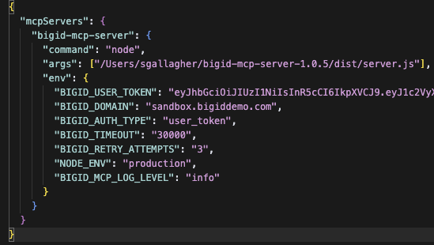

üöÄ Claude Desktop Setup Guide for BigID MCP Server
üìã Prerequisites
- macOS (tested on macOS 14.4+)
- Node.js 18+ (will be installed if missing)
- Homebrew (will be installed if missing)
- BigID user token and domain
- Chrome browser (for viewing this guide)
üìù About This Installation
The installation script will automatically handle dependencies and only request sudo permissions if both Node.js and Homebrew are missing. If you prefer to install Homebrew manually, you can do so at brew.sh.
üì• Step 1: Download and Install Claude Desktop
1
Download Claude Desktop
First, you need to download and install Claude Desktop from the official Anthropic website:
Download Claude Desktop
Follow the installation instructions for macOS.
⚙️ Step 2: Run the Installation Script
2
Execute the Installation Script
Open a terminal in the bigid-mcp-server-1.0.X directory and run:
./install.sh
This script will automatically:
- Check for and install Homebrew (if missing)
- Check for and install Node.js 18+ (if missing)
- Install all required npm dependencies
- Create a Claude Desktop configuration template
- Display this setup guide in Chrome
⚠️ Note: The script will only request sudo permissions if both Node.js and Homebrew are missing.
üîß Step 3: Configure Claude Desktop
3
Open Claude Desktop Settings
Launch Claude Desktop and follow these steps:
- Click Claude in the menu bar
- Select Settings
- Navigate to the Developer tab
- Click the Edit Config button
- Edit the file in the text editor of your choice
4
Add MCP Server Configuration
In the configuration editor, add the following MCP server configuration:
üí° Tip: The install script creates a pre-configured claude-desktop-config.json file with the correct path to the MCP server already set. You can use that file as a template instead of manually adding it to the configuration below. You still need to copy it into the actual Claude config file.
{
"mcpServers": {
"bigid-mcp-server": {
"command": "node",
"args": [
"/path/to/bigid-mcp-server/dist/server.js"
],
"env": {
"BIGID_USER_TOKEN": "your-actual-user-token-here",
"BIGID_DOMAIN": "your-bigid-domain.com",
"BIGID_AUTH_TYPE": "user_token",
"BIGID_TIMEOUT": "30000",
"BIGID_RETRY_ATTEMPTS": "3",
"NODE_ENV": "production",
"BIGID_MCP_LOG_LEVEL": "info"
},
"description": "BigID data discovery, catalog, and security monitoring"
}
}
}
⚠️ Important: Replace the following values:
/path/to/bigid-mcp-server with the actual path to your installationyour-actual-user-token-here with your BigID user tokenyour-bigid-domain.com with your BigID server domain
üîê Need Help Getting Your BigID User Token?
If you don't have your BigID user token, you can get one using Chrome DevTools:
Get Token from Authorization Header
- Go to Your BigID Instance: Visit your BigID domain (e.g., BigID Sandbox Environment)
- Sign In: Use your Okta credentials to authenticate
- Open Chrome DevTools: Press
F12 or Cmd+Option+I (Mac), or right-click anywhere on the page and select "Inspect"
- Go to Network Tab: Click on the "Network" tab in DevTools
- Refresh the Page: Press
F5 or Cmd+R to refresh
- Find API Requests: Look for requests to your BigID domain in the network list
- Check Authorization Header: Click on any request, then look in the "Request Headers" section for "Authorization"
- Copy the Token: Copy the entire Authorization header value
⚠️ Important Notes
- Token Expiry: These tokens typically expire and need to be replaced periodically
- Domain-Specific: BigID tokens are NOT cross-domain. You must use a different token for each BigID domain/instance
- Security: Keep your tokens secure and don't share them
- Demo Site: The sandbox demo is perfect for testing the setup
- Restart Claude Desktop: Always restart Claude Desktop after changing the config
üìù How to Use Your Token
- Copy the Token: Select and copy the entire Authorization header value
- Update Configuration: In your Claude Desktop MCP config, replace the placeholder with your token
- Test: Restart Claude Desktop and ask Claude to use the BigID MCP server

Example MCP server configuration in Claude Desktop
üìö Step 4: Start Using BigID with Claude
5
Start a New Chat
Create a new chat in Claude Desktop to begin using the BigID MCP server.
üéØ Step 5: Begin Your BigID Queries
6
Ask Claude About Your BigID Data
Now you can ask Claude questions about your BigID data! Claude has access to all the BigID tools and can help you explore your data catalog, security posture, and more.
üí° Note: There is a BigID filter spec resource that can be added to your chat. It is primarily used for constructing custom queries for catalog endpoints. For most use cases, you can simply ask Claude to use the BigID MCP server directly.
⚠️ CRITICAL SECURITY WARNING
Always validate MCP tool queries and results:
- Inspect Tool Queries: Always review the MCP tool queries that Claude generates before they are executed
- Validate Results: Cross-reference Claude's analysis against the raw data returned by the MCP tools
- Verify Accuracy: Don't rely solely on Claude's interpretation - check the underlying data yourself
- Review Permissions: Ensure the queries only access data you're authorized to view
Remember: Claude is an AI assistant that can make mistakes. Always validate both the queries being made and the conclusions drawn from the results.
üîç Available Tools
Claude has access to these BigID tools:
üö® Troubleshooting
Common Issues and Solutions
- MCP Server Not Starting: Check that Node.js is installed and the server path is correct
- Authentication Errors: Verify your BigID user token in the configuration
- Bad Tool Queries: Ensure the BigID resource is added to each new chat
- Connection Issues: Check your network connection and BigID server accessibility
- Token Expired: Replace your user token if it has expired
✅
You're All Set!
Congratulations! You've successfully set up Claude Desktop with the BigID MCP server. You can now use Claude to interact with your BigID data.